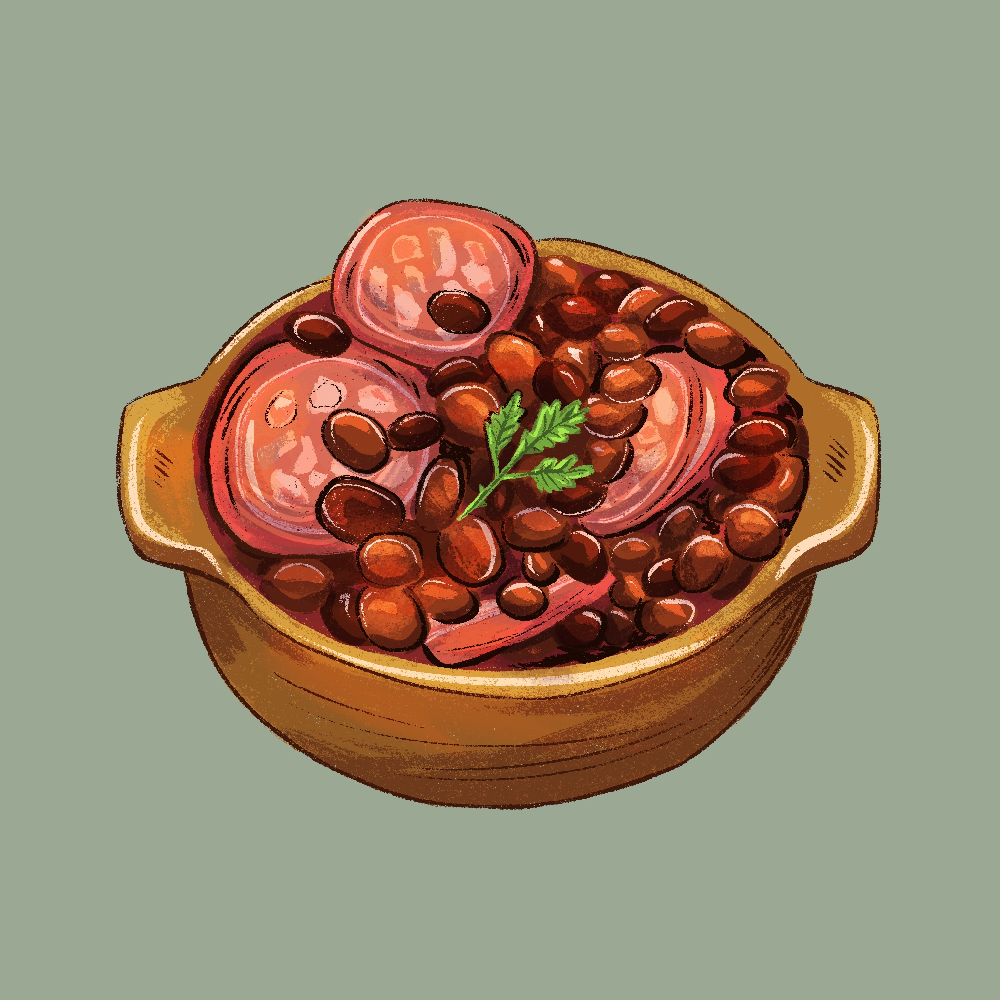

HISTÓRIA: A feijoada brasileira, símbolo culinário nacional, evoluiu de cozidos europeus (como o cassoulet francês e cozidos portugueses) adaptados com ingredientes locais, como o feijão preto. Popularmente associada às senzalas, a origem mito de que escravos criaram o prato com sobras de porco é contestada, sendo mais provável uma influência da elite colonial. O prato se consolidou no século XIX, misturando carnes salgadas, feijão e farinha.
INGREDIENTES: Feijão preto, carnes (carne seca, lombo, costelinha) e embutidos (paio, linguiça calabresa, bacon).
HISTÓRIA: O pão de queijo surgiu em Minas Gerais por volta do século XVIII, criado como uma alternativa ao pão de trigo, que era raro na região. Cozinheiras mineiras adaptaram receitas usando polvilho (fécula de mandioca), que é uma herança indígena, misturado com queijo curado, leite e ovos, criando a amada receita.
INGREDIENTES: Polvilho (azedo ou doce), queijo meia cura, leite, ovos, água, óleo e sal.